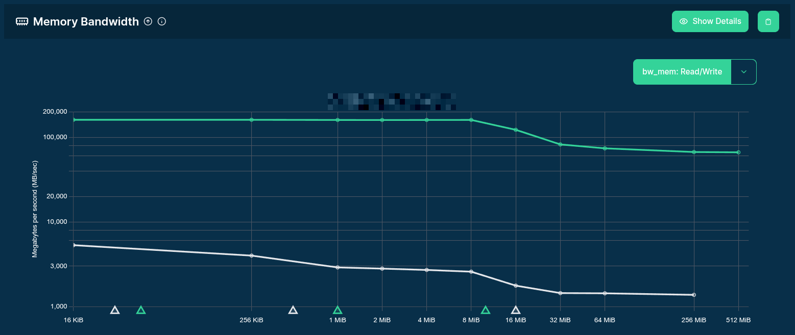
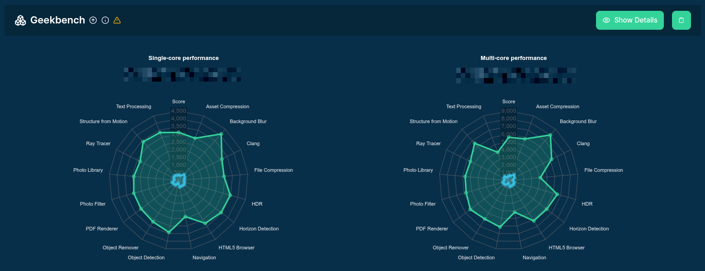
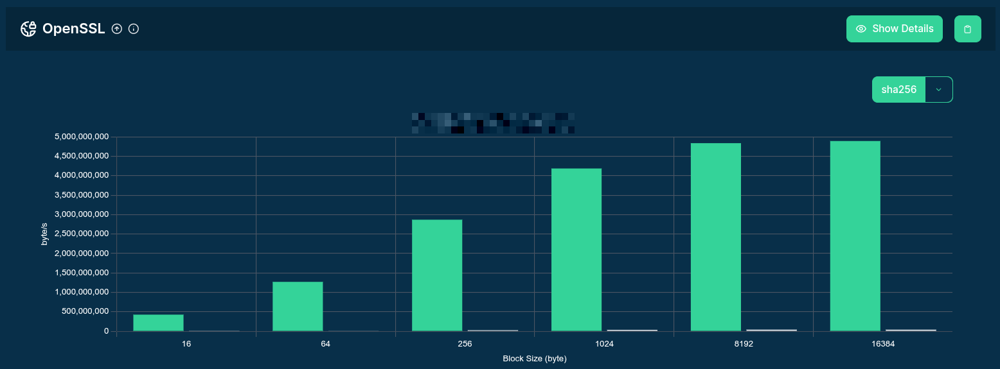
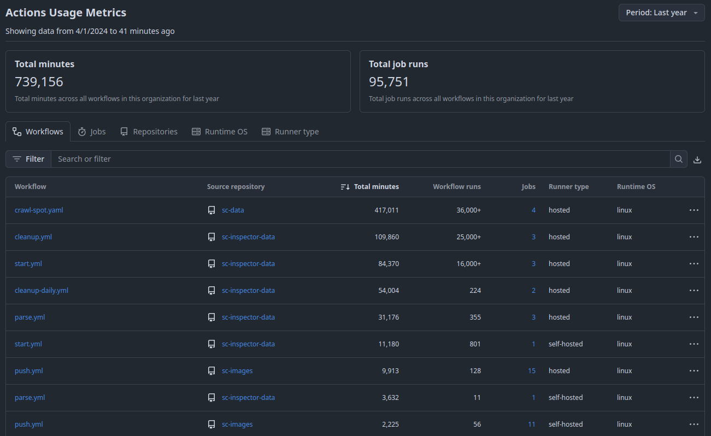
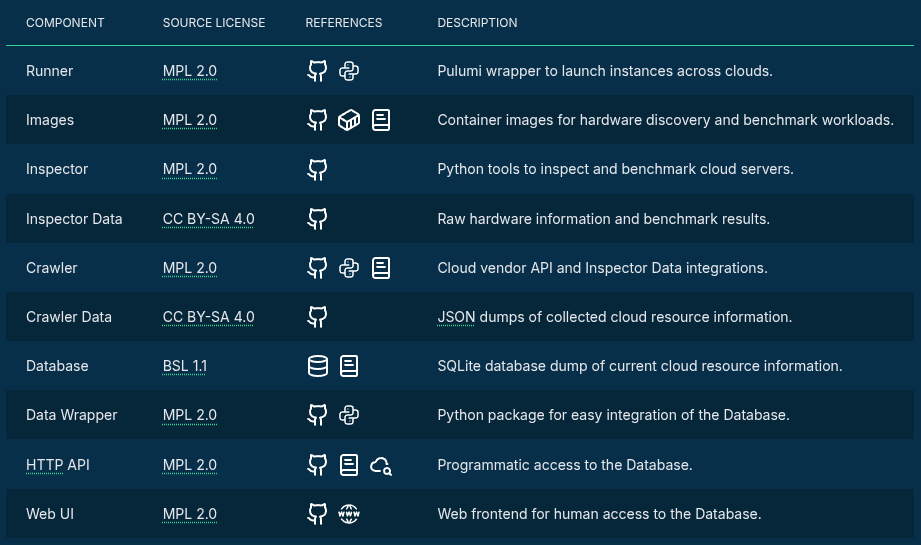
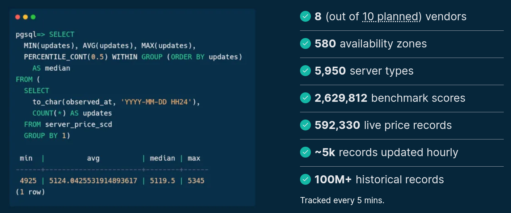
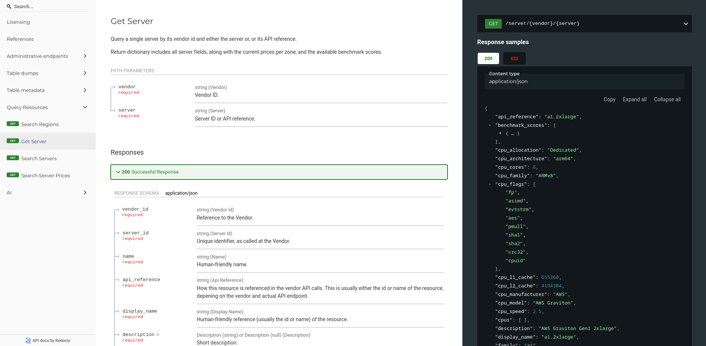

563 Things Karpenter Didn’t Know About
Gergely Daroczi
Attila Nagy
2026-10-30
563 Things
Karpenter Didn’t Know About
Gergely Daroczi & Attila Nagy, Spare Cores
Oct 30, 2026 @ Budapest, Hungary
Slides: sparecores.com/talks
Press Space or click the green arrow icons to navigate the slides ->
hermes — gergely@big-mac-4
hermes agent · local model · 🎙 phone mic: recording (1h 47m)
❯
thinking…✓ need the pub conversation → using the live recording
stopping audio recording on phone…✓ recording stopped (1h 47m 12s, 192 MB, pub-chat.wav)
transcribing locally with whisper…✓ transcribed (2 speakers, 11,382 words, 487 words beeped, 5 beers)
summarizing transcript…✓ summarized (5 key points, 43 off-topic rants skipped)
Here's what you discussed with Attila:
You bumped into Attila at the pub
His team's Python app scales embarrassingly badly, and they need it to be faster
He's been looking for help with speeding it up
You mentioned you're giving a talk on exactly this at KCD Budapest
You offered to show him something there, and he promised to come and see it
Good luck with the talk! 🍀
Guess the Number!
How much better is the highest performing 2-vCPU cloud server’s single-core performance compared to the lowest?
| SERVER A | SERVER B | |
|---|---|---|
| Vendor | Hyperscaler | Hyperscaler |
| Server SKU | 👻 | 👻 |
| vCPUs | 2 | 2 |
| Architecture | x86_64 | x86_64 |
| Physical cores | 1 | 2 |
| CPU allocation | Shared | Dedicated |
| CPU (turbo) frequency | 2.2 GHz | 5.0 GHz |
| CPU L1D cache | 32 KiB | 96 KiB |
| Memory | 1 GiB | 8 GiB |
| Single-core SCore | 133 | 4,645 |
| Performance ratio | x34.92481 | |

30-50x

10-20x

100x
10-100x


$ whois sparecores.com
- Funded by NGI Search (EU consortium) in 2024
- Vendor independent, open-source project
- Seal of Excellence from the European Commission in 2026
- Accepted into NVIDIA Inception, AWS Open Source Credits
- Beneficiary of cloud credits from 8 vendors (overall ~$100k)
- 20+ talks in 9 countries (e.g. Berlin Buzzwords, PyData, KCD)
- Featured by The Pragmatic Engineer in Oct 2024
- Jeff Barr (Chief Evangelist at AWS) on our Reddit post:
This was awesome, thanks for sharing.
$ apropos sparecores.com
- Open-source tools, database schemas and documentation to inspect and inventory cloud vendors and their offerings, including pricing and measured performance.
- Managed infrastructure, databases, APIs, SDKs, and web applications to make this data publicly accessible.
- Open-source helpers to select, start and manage instances in your own environment.
- Open-source Python/R packages and workflow orchestration extensions (e.g. Metaflow) to track resource usage and cost of DS/ML/AI jobs. Open-source tooling to right-size instances.
- Add-on services to scale data science workflows, even without direct vendor engagement.
$ curl -I github.com/sparecores

$ ls -1 sparecores

$ curl -I sparecores.com/navigator

Source: sparecores.com
$ curl sparecores.com/servers
$ curl sparecores.com/server/gcp/g2-standard-16
$ curl sparecores.com/server/gcp/g2-standard-16
$ curl sparecores.com/server/gcp/g2-standard-16
$ curl sparecores.com/server/gcp/g2-standard-16
$ curl sparecores.com/server/gcp/g2-standard-16
$ curl sparecores.com/server/gcp/g2-standard-16
$ curl sparecores.com/server/gcp/g2-standard-16
$ curl sparecores.com/server/gcp/g2-standard-16
>>> from navigator.www import server
$ curl sparecores.com/servers/compare
$ curl sparecores.com/servers/compare
$ curl sparecores.com/advisor
$ curl docs.sparecores.com/api

$ strace -e environment gilty.py
- EKS
- Karpenter
- EKS Auto mode
$ claude –plan “fix problem”
$ strace -e environment sparecores.com
ENTRYPOINT [“sc-karpenter-nodepool”]
- single cloud only
- defined region
- needs karpenter installed
- needs EKS, GKE, AKS, etc.
$ cat sc-karpenter-nodepool/ROADMAP.md
- onprem kubernetes cluster
- be akarunk huzni gcp-t, hetznert etc AKARMIT EKS, GKE, AKS nelkul
- controller? operator? -> vendor API create vpc/storage/node + network + join cluster